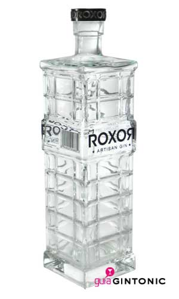

La ginebra Roxor gin Artisan es un nuevo producto que lanzaron en verano del 2011. Destilada en asociación entre New Artisan Spirits y San Luis Spirits, han creado la primera ginebra producida en Texas (EEUU).
New Artisan Spirits está encabezado por el ex Coca-Cola Don Short y Robert Del Grande, un chef que también tiene un título en bioquímica. Este último, ha utilizado toda su experiéncia y conocimientos en el mundo de la cocina para crear la mezcla de los 12 botánicos de la ginebra Roxor gin.
El resultado es una ginebra cuyos sabores suaves y cítricos están muy bien equilibrados. El equilibrio del enebro con las cáscaras de los cítricos frescos y otros productos vegetales incluidos tradicionales como el cilantro y la raíz de lirio, es perfecto. A partir de ahí, tenemos algunas sorpresas, como las nueces de Texas, semillas de cacao, la zarzaparrilla y la canela. Roxor gin es una ginebra de estilo occidental, dónde las nueces de Texas aparecen hacia el final para dejarte un sabor fantástico.
Si eres fiel a las London Dry gin, esta es una ginebra que debes probar. Además, podemos afirmar que está presentada en uno de los envases más hermosos que hemos visto en el mundo de las ginebras.